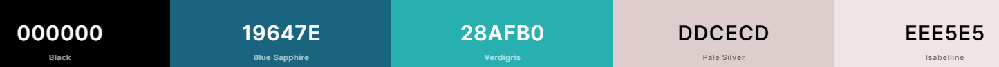
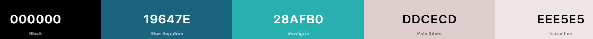

Color Scheme
Blue is the predominant color in this color scheme because it gives us the feeling of calm and refers to the sky. Purple is a secondary color, and it is complementary to the blue and black color.
Blue is the predominant color in this color scheme because it gives us the feeling of calm and refers to the sky. Purple is a secondary color, and it is complementary to the blue and black color.
